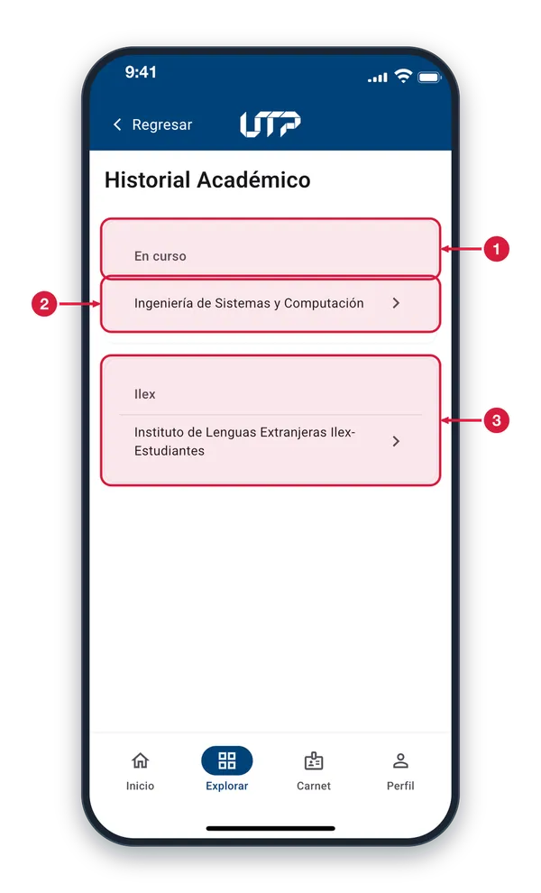
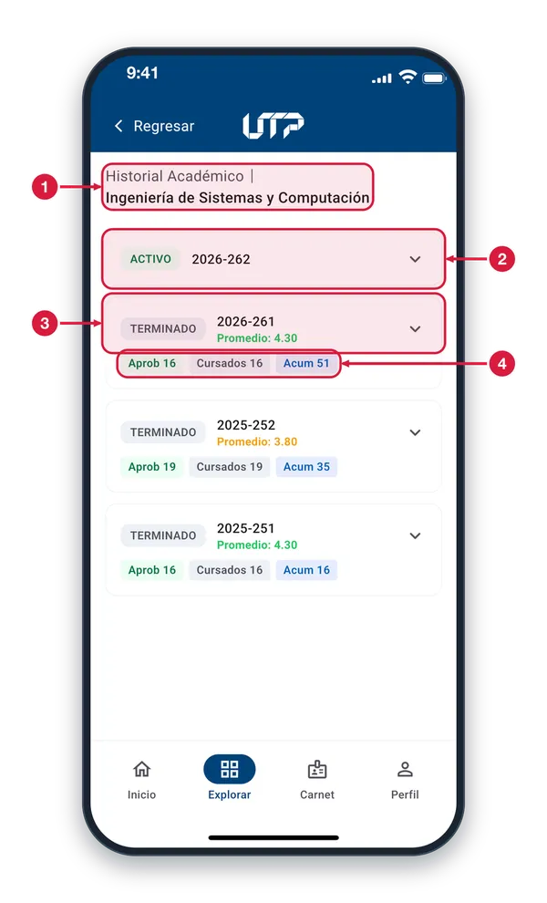
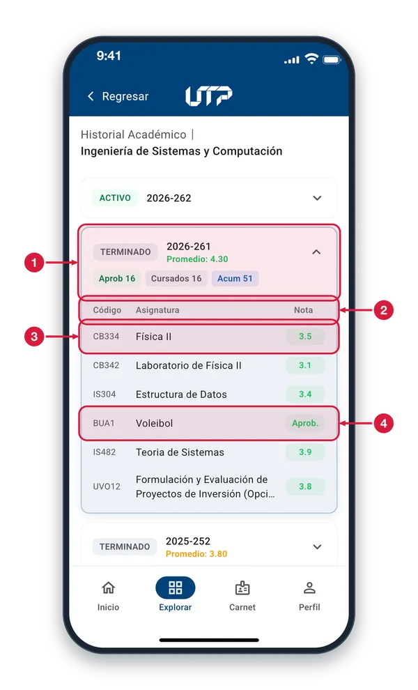
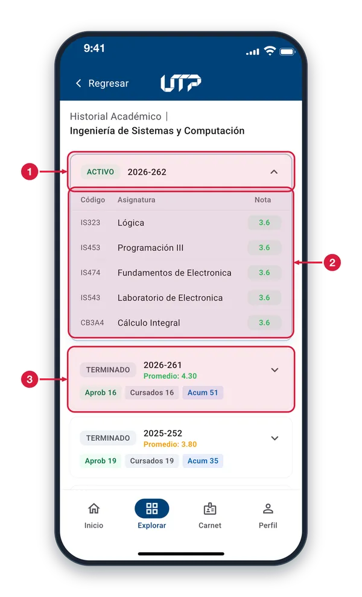

Tu trayectoria académica completa en un solo lugar: desde el primer semestre hasta el actual, con promedio, créditos y materias por periodo.
El módulo de Historial Académico cuenta con:
Selección de programa académico (si tienes más de uno)
Promedio acumulado y créditos totales aprobados
Vista por periodos académicos expandibles
Detalle de materias con nota y estado por periodo
Solo podrás ver y hacer uso del módulo HISTORIAL ACADÉMICO cuando te loguees en la aplicación
Historial académico1 de 4
Aquí están tus programas académicos, agrupados por su estado. Entras desde Perfil o desde Explorar.

Grupo de programas Los programas se agrupan por estado: «En curso», «Finalizadas», «Ilex», «Inactivos» y «Fuera». Solo ves los grupos en los que tienes algún programa.
Programa Cada fila es un programa. Tócala para ver su historial periodo por periodo. Si solo tienes un programa, la app te lleva directo a sus periodos.
Otros grupos «Ilex» reúne tus programas del Instituto de Lenguas Extranjeras. Funcionan igual: toca la fila para ver sus periodos.
Periodos de un programa2 de 4
Cada tarjeta es un periodo del programa, del más reciente al más antiguo. Toca una para ver sus materias.

Programa elegido La ruta muestra «Historial Académico» y, debajo, el nombre del programa cuyos periodos estás viendo.
Periodo activo El periodo que cursas lleva la etiqueta verde ACTIVO y el año-periodo. Aún no muestra promedio ni créditos. Toca la tarjeta para ver sus materias.
Periodo terminado Etiqueta gris TERMINADO, año-periodo y promedio del periodo: verde desde 4.0, naranja entre 3.0 y 3.9, rojo por debajo de 3.0. Los demás periodos funcionan igual.
Créditos del periodo Aprob son los créditos aprobados en el periodo, Cursados los que cursaste y Acum los que llevas acumulados hasta ese periodo.
Materias de un periodo3 de 4
Toca un periodo terminado y se despliegan sus materias, cada una con su nota final.

Periodo desplegado Al tocar un periodo se abre su tabla de materias y la flecha apunta hacia arriba. Tócalo otra vez para cerrarlo; solo hay un periodo abierto a la vez.
Columnas Código es el de la asignatura, Asignatura es su nombre y Nota es la nota final que obtuviste.
Materia y nota Cada fila es una materia. La nota va en un chip: verde si la aprobaste y rojo si no. Los nombres muy largos se cortan con puntos suspensivos.
Aprobada sin nota Las materias que no llevan nota numérica muestran «Aprob.» si las aprobaste o «Reprob.» si no, en lugar de un número.
Materias del periodo activo4 de 4
El periodo activo también se despliega y muestra las materias que estás cursando ahora.

Periodo activo abierto La etiqueta ACTIVO marca el periodo en curso. Toca la tarjeta para abrir o cerrar su tabla de materias; este periodo no muestra promedio ni créditos.
Materias que cursas La tabla lista el código, el nombre y la nota de cada materia del periodo. La nota va en un chip: verde si es de 3.0 o más y rojo si es menor.
Periodos anteriores Debajo siguen los periodos terminados, del más reciente al más antiguo. Toca uno para abrirlo; al hacerlo, el periodo activo se cierra.